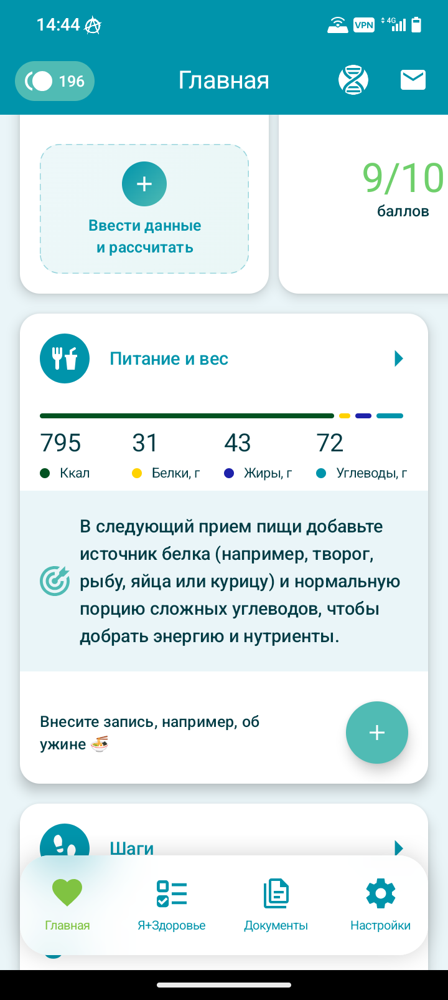
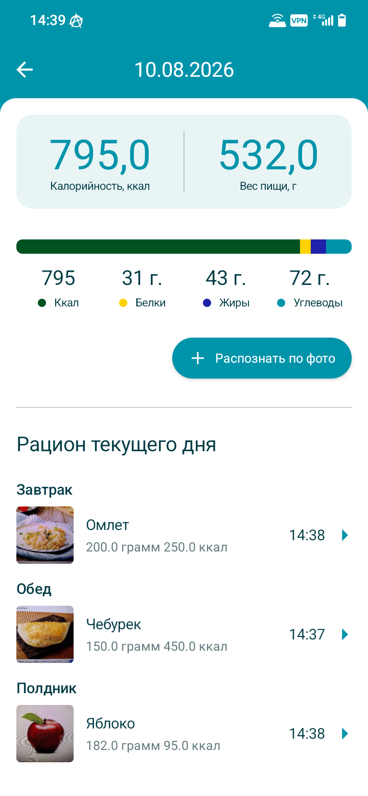
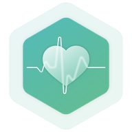
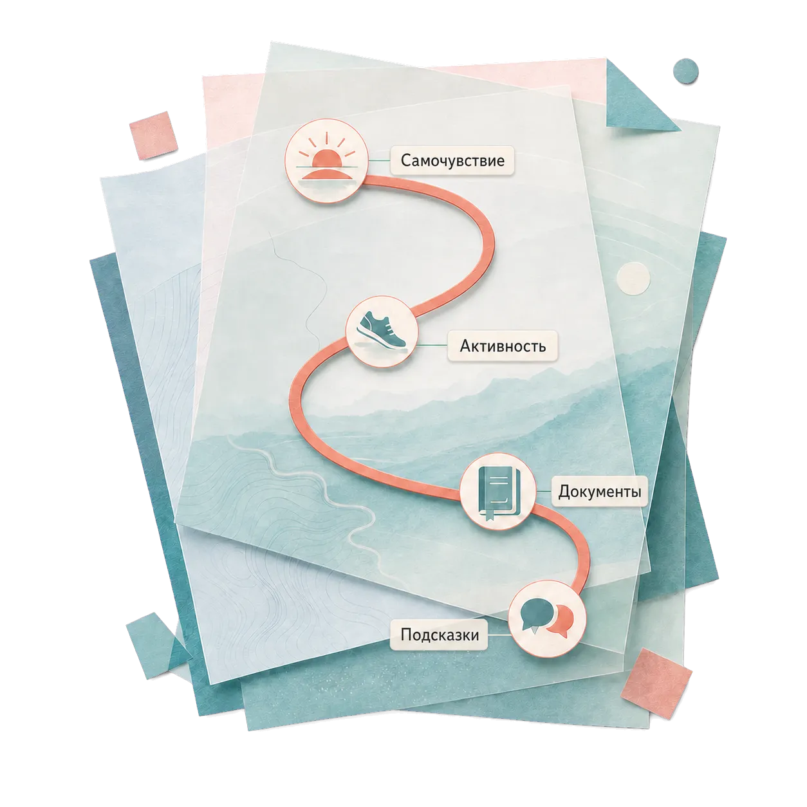
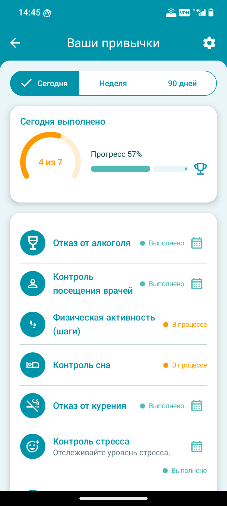
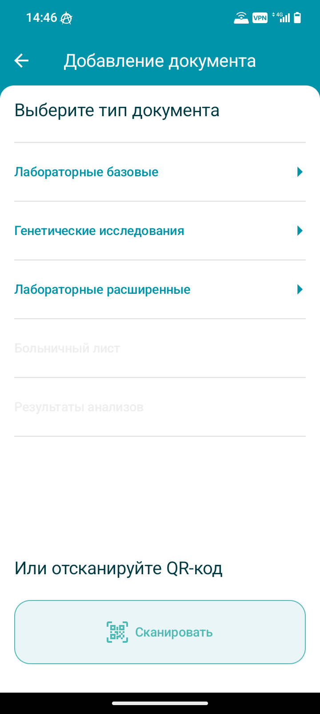
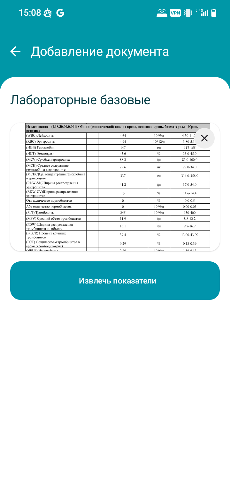
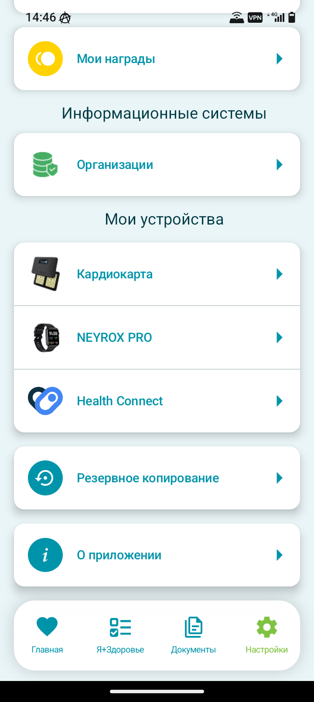

01 / ПИТАНИЕ
Фотографируйте еду
Дневник ведёт сам себя
ИИ определяет блюдо, рассчитывает среднее КБЖУ и автоматом добавляет запись




С чего начать
Привычки, самочувствие, анализы и показатели организма — начните с малого
Приложение объединит информацию и покажет первое представление о вашем состоянии
Ведите дневник питания и сна, отмечайте изменения состояния и фиксируйте важные события
Со временем портрет становится точнее и помогает совершать осознанные шаги к здоровью
Простота использования
Мы — по минимуму
01 / ПИТАНИЕ
Дневник ведёт сам себя
ИИ определяет блюдо, рассчитывает среднее КБЖУ и автоматом добавляет запись


02 / ПРИВЫЧКИ
Помнить всё не нужно
Выберите нужные один раз и отмечайте их каждый день — история сохранится автоматически и покажет прогресс за месяц

03 / ДОКУМЕНТЫ
Чтобы видеть всю картину
QR-код, фотография или PDF — ИИ сам считает результаты и дополнит ваш портрет и рекомендации


04 / СВЯЗЬ
Интеграции работают на вас
Приложение автоматически получает показатели из популярных приложений и устройств

Интеграции
Если вы уже пользуетесь приложениями для здоровья или носимыми устройствами, просто подключите их к приложению в настройках
Анонимность
Мы сделали всё от нас зависящее, чтобы обеспечить безопасность данных и не отвлекать вас от заботы о здоровье
Решайте, какие данные хранить, передавать и использовать
Для работы приложения необязательно раскрывать личность
Приложение работает с обезличенными показателями здоровья
От доступа к местоположению можно отказаться
Скачать приложение